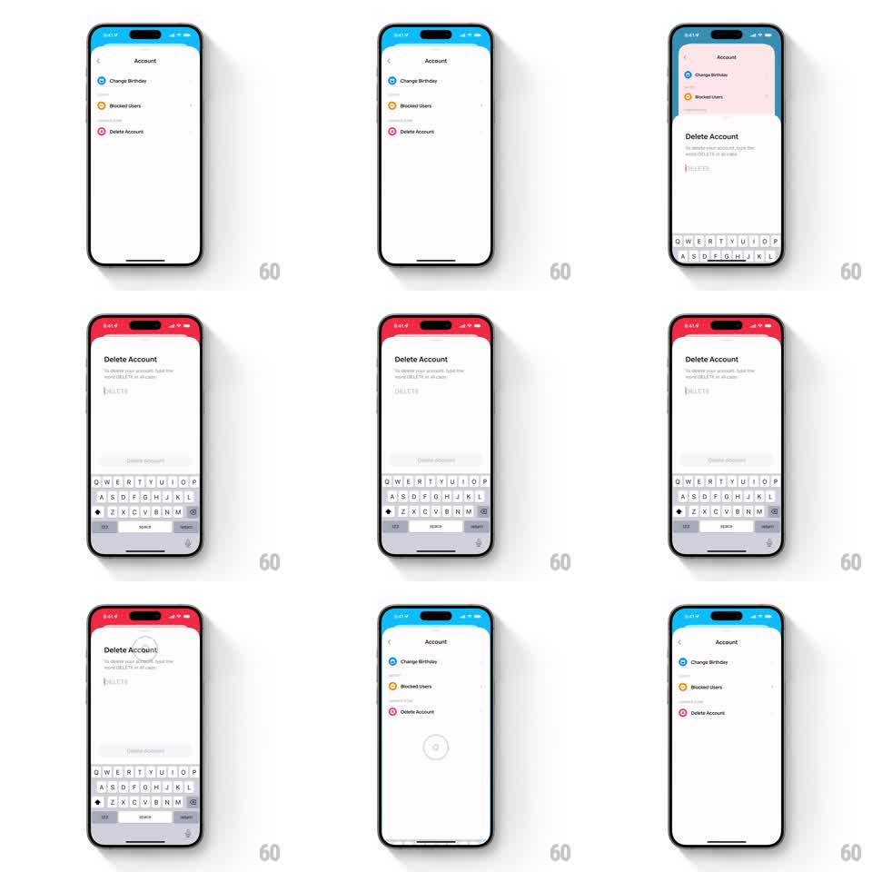

Media
Frame-by-frame

Rebuild this interaction 1:1: Honk's delete account flow - tapping Delete Account makes the settings view scale down and recede like a card in a stack while the confirmation sheet slides up over it, and dismissing the sheet springs the parent back to full size.

Rebuild this interaction 1:1: Honk's delete account flow - tapping Delete Account makes the settings view scale down and recede like a card in a stack while the confirmation sheet slides up over it, and dismissing the sheet springs the parent back to full size. ## Integration Integration: stack-agnostic spec - springs given as stiffness/damping, timed motions as duration + curve; map every value to your framework and animation library of choice. ## Scene "Account" settings (blue status-bar tint, list: Change Birthday, Blocked Users, Delete Account). The Delete Account sheet: full-height rounded card with red-tinted top area, "Delete Account" title, "To delete your account, type the word DELETE in all caps", a text field, keyboard, and a disabled-looking "Delete account" button. A grabber sits at the sheet's top. ## Motion spec Pattern: card-stack modal - parent recedes, sheet covers. - Present: the parent view scales down (1 -> 0.92) and rounds its corners (12pt), dimming slightly (200ms) - it recedes as a background card; simultaneously the sheet slides up from the bottom (spring ~300/26, 380ms) with its red header tint. - The keyboard rises with the sheet (synchronized, same spring). - Drag-to-dismiss: the sheet tracks the finger 1:1; release past 40% dismisses (sheet slides down 300ms), otherwise springs back (spring ~320/24). - Dismiss: the parent scales back to 1 with square corners as the sheet exits (paired 300ms animations); a brief spinner shows where the parent reloads. - The status bar tint follows the topmost card: blue for settings, red for the sheet. ## Calibration - The parent must remain visible as a peek behind the sheet's top - that peek is the stack metaphor. - Scale and corner radius animate together; neither alone sells the recede. ## Reduced motion Sheet fades over a dimmed parent (250ms); no scaling. ## Don't miss - The confirmation copy requires typing DELETE in all caps - keep the field and the all-caps instruction. - The Delete account button stays subdued until the field matches.